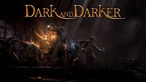

About
このサイトは、淑徳中学高等学校の授業内で作成したサイトです。
Profile
高校１年生の小川慈司です。趣味は音楽を聴くことやゲームをすることで、休みの日は遊びに誘われない限り一歩も家から出ないで過ごしています。 ゲームが好きでプログラムやPCを使った仕事に興味を持ち、この授業を受講し、このサイトを製作しました。
好きなゲーム
valorant,dark and darker,APEX,over watch, etc.（基本的にFPSが好きです。ドラクエなどのRPGもたくさんやってます）
My Pages
この下のリンクを押すことで僕がおすすめするゲームの紹介をしたサイトを閲覧することができます。ぜひ確認してみてください！